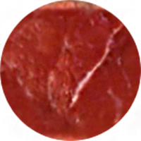
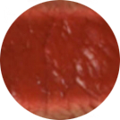
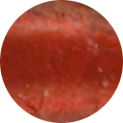
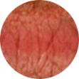
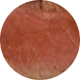
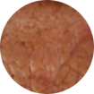

Choose
Your Own
Steak
1. Which steak would you like?
2. Hou would you like your steak done?
육즙이 터져나오는 스테이크를 원하는
당신에게 추천!
Sirloin
가장 대중적이며, 가장 쉽게 접할 수 있는 등심
안심과 더불어서 스테이크 중 가장 많이 쓰이는 부위로, 소 등쪽의 살코기입니다.
근육 사이사이 지방이 자리하고 있는데, 이 지방을 마블링이라고도 합니다.
지방 함량이 웬만큼 있는 덕분에 맛이 진하며, 스테이크나 로스로 조리해서
먹는다면 고기 본연의 맛을 가장 강하게 느낄 수 있습니다.
조금 비싸더라도 부드러움은 최상,
연한 살코기를 좋아하는 당신에게 추천!
Tenderloin
어떤 부위보다도 가장 부드러운 안심
가장 부드러운 쇠고기 부위입니다. 가장 양이 적으며, 가장 비쌉니다.
부드럽지만 지방 함량이 적어서 풍미가 약합니다.
그래서 진한 맛보다는 담백한 맛이 특징입니다.
오래 익히면 고기가 질겨져서, 보통은 미디움 레어로 조리하는 것을
추천합니다.
덜 익혀먹을 때 가장 맛있습니다.
부드러움과 진한 맛을 동시에 느끼고 싶은
당신에게 추천!
Short loin
등심보다 부드럽고, 안심보다 진한 채끝
채끝은 등심보다 부드럽고, 안심보다 맛있습니다.
스테이크의 진한 맛은 등심보다는 부족하지만, 부드러움은
반대입니다. 채끝 부위는 뉴욕 스테이크를 만드는데 사용되는데,
인기가 많아서 등심보다 좀 더 비싸게 팔립니다.
Strip Steak라고도 하고, Cube Steak라고도 합니다.
마블링이 화려하며 안심 다음으로
부드러운 스테이크.
조금 느끼해도 상관 없다,
맛있는 스테이크를 원한다면 추천!
Flat-Iron Steak
어디서 먹어도 실패하지 않는 살치살
스테이크중 두번째로 부드러운 부위로 갈비 밑부분 배쪽에 있습니다.
Onglet Steak라고도 합니다. 영국에선 이 부위를 Butcher's Cut이라고 합니다.
사실 고급 스테이크집에서는 이 부위를 잘 팔지 않습니다만, 요즘 들어 일본
와규 소고기나 고베 소고기의 플랫아이언 스테이크를 파는 집들이 늘어나는
추세입니다.
주로 샬롯(shallot), 와인, 버터로 소스를 만들어서 근육결 반대로 얇게 썰은
스테이크와 같이 먹습니다.
안심과 등심, 둘 다 먹고 싶은
당신에게 추천!
T-Bone Steak
안심과 등심을 동시에 맛볼 수 있는 티본
한국에선 거의 찾아보기 힘든 스테이크입니다.
뼈가 알파멧 모양의 T자 같이 생겼다고 해서 T-Bone 스테이크라고 불리는데,
포터하우스(Poterhouse)스테이크라고도 합니다.
T자 모양의 양쪽에 고기가 붙어있는데, 살이 적은 쪽은 안심이고
반대쪽은 채끝입니다. 한 스테이크에서 안심과 채끝 두 가지를 즐길 수 있습니다.
What is the
softest part of a steak?
1. 안심(File Mignon)
2. 살치살(Flat-Iron Steak)
3. 보섭살(Top Sirloin Steak Center Cut)
4. 갈비(Rib Eye)
5. 채끝(Stip Steak Center Cut)
How it's Done?
?

BLUE RARE
거의 익히지 않은 상태로, 앞뒤로
몇 초만 아주 살짝 익혔다.

RARE
고기의 표면을 불에 살짝 굽는다.
자르면 육즙이 흐르고 내부는 생고기에 가깝다.

MIDIUM RARE
중심부가 핑크인 부분과 붉은 부분이 잘 섞여
반쯤 덜 구운 상태로 미디움과 레어의 중간 단계

MIDIUM
고기의 표면은 회갈색이나, 내부는
장미색이고 자르면 육즙이 약간 있다.

MIDIUM WELL
미디움과 웰던의 중간 단계

WELL DONE
고기의 표면과 내부 모두 갈색정도로
육즙은 거의 없다.
CHAE YOUNG
tjdwpfl123@naver.com